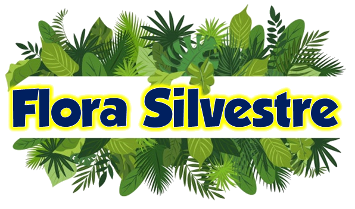
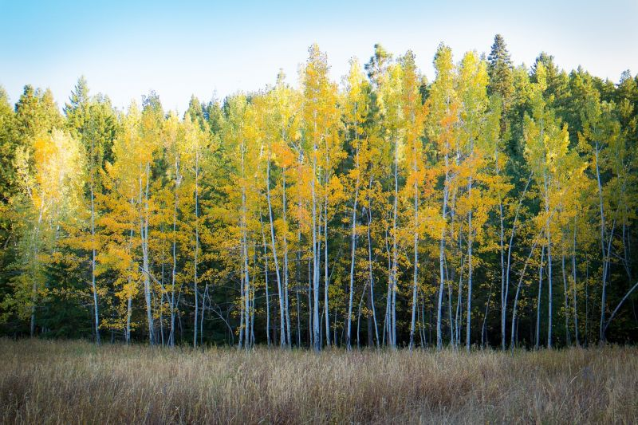
El abedul es un árbol cuyo nombre científico es betula. Los abedules son árboles de montaña que forman bosques claros y abiertos, que prosperan también en terrenos afectados por aludes o corrimientos de terreno. El abedul es un árbol caducifolio de entre 10 y 30 metros de alto, muy esbelto, de copa alargada y ramas jóvenes generalmente colgantes. La corteza, de color blanco, atravesada por líneas o fisuras negras, es un aspecto que nos sirve para identificarlo de lejos.
Las hojas tienen forma triangular, puntiagudas, con los márgenes aserrados. Y las flores se agrupan en amentos (inflorescencias) colgantes. Otra característica del abedul es el movimiento vibratorio que muestra su follaje al menor soplo de aire, y la bella coloración dorada que adquiere en el otoño. Lo que destaca al abedul de otras plantas de su familia es su corteza de color blanco plateado, que combinado a su altura importante (puede llegar medir 30 metros) sus bosques constituyen todo un atractivo.
Los riegos deben ser frecuentes, manteniendo siempre que sea posible el suelo húmedo. Aunque le gusta la luz no soporta bien las altas temperaturas ni la sequedad, sin embargo resiste cómodamente las heladas.
El abedul puede multiplicarse por semillas que se recogen en verano y se plantan en otoño o en primavera. Además, también puede reproducirse por esquejes o acodos. Los esquejes con hoja pueden enraízar bien si les ayudamos con hormonas en otoño, aunque es conveniente mantenerlo en un lugar cubierto.
La madera del abedul es utilizada para la elaboración de pastas de papel y tinta de imprentas. Así mismo esta madera es de fácil labranza por lo que se la utiliza mucho en la fabricación de mangos para herramientas. Un dato curioso y que seguramente es desconocido para la mayoría, es que las matrioshki (las famosas muñecas rusas que van una dentro de otra) son fabricadas con maderas de abedul.
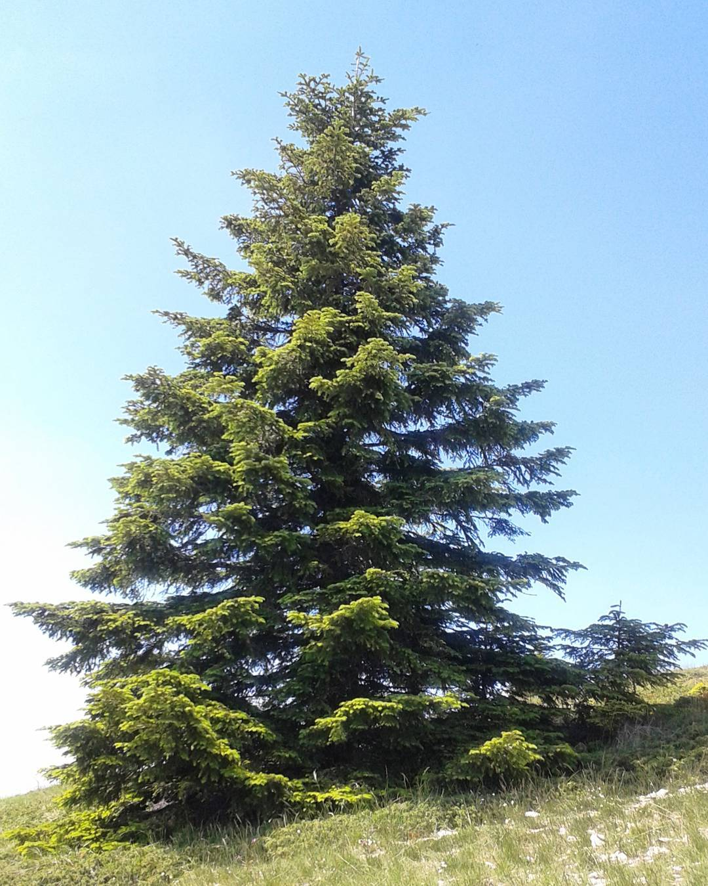
El abeto es un árbol de la familia de las pináceas que se encuentra dentro de la colección de coníferas. Es uno de los más conocidos y de los que mayor número de información existe entre otras cosas, porque siempre ha estado vinculado a los grandes árboles que se usan para el festejo navideño o porque es de los que más gustan para la decoración de un jardín o parque exterior.
Los verdaderos abetos se distinguen de los falsos por un rasgo bastante sobresaliente y no es otro que la producción de resina olorosa. Dicho esto, todos aquellos abetos que aporten este material, son dignos de llamarse “abetos reales”. Todas las partes de los abetos (ramas, hojas, conos o troncos) sacan resina olorosa bastante en abundancia por lo que es bastante complicado tratar con estos tipos sin quedar impregnado de este material completamente viscoso.
Las hojas de los abetos son de tipo acícula, pequeña, plana y bastante rígida. Estas características es lo que hace que sea bastante decorativa y que por lo general, el abeto guste bastante para los jardines o espacios abiertos. Los abetos de mayor desarrollo requieren espacios que estén frescos y en algunos casos, bastante frías puesto que están acostumbrados a climas de hielos. Con independencia de su tamaño, estos árboles deben de vivir a cierta altura sobre el nivel del mar y normalmente, esta distancia tiene que estar por encima de los 700 m y hasta casi los 2000 siendo así, ideales para las zonas de montaña dónde el tiempo les será de gran beneficio.
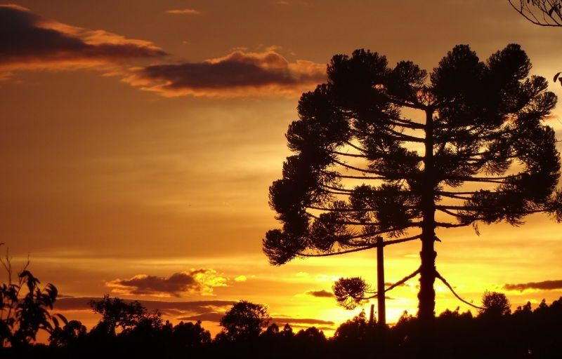
La araucaria es un árbol capaz de crecer hasta 50 metros de altura. Su tronco es muy recto y cilíndrico, llega a medir 2 metros de diámetro. Su copa es característica y presenta una forma de pirámide, como si se tratara de un paraguas o una sombrilla. El follaje se compone de 3 a 7 ramas por verticilo, de disposición perpendicular al tronco, o bien ligeramente arqueadas hacia arriba, siendo esta disposición bastante regular, manteniendo cierto patrón. La corteza del tronco rugosa y gruesa, lo que, en definitiva, llega a representar un 25% del volumen total.
Este árbol posee ramas cilíndricas. Las hojas, que los cubren totalmente, son muy imbricadas, perennes y lanceoladas, están provistas de una base ancha. Las hojas de la araucaria pueden llegar a medir 3 a 4 centímetros de largo y 1,5 a 2 centímetros de ancho. Destaca su color verde oscuro y lustroso y se disponen en el tallo de manera helicoidal, cubriéndolo totalmente.
La araucaria posee flores masculinas que son conos cilíndricos que se ubican en la terminación de las ramas. Su color es castaño oscuro, miden 12 centímetros de largo y unos 5 centímetros de diámetro. Presentan escamas punzantes, sumamente imbricadas que liberan el polen al abrirse. Las femeninas, por su parte, son conos esféricos de color verde, más llamativos que sus pares masculinos, miden 15 a 20 centímetros de diámetro, integrados por numerosas escamas coriáceas y punzantes. Podemos localizar estas flores en los extremos de las ramas nuevas. Los piñones de este árbol constituyeron, en la antigüedad, una importante fuente de alimentos para las culturas que habitaban las tierras del sur argentino y chileno, como los pehuenches. Con un importante aporte de hidratos de carbono, los frutos de la araucaria se convirtieron en un gran aporte energético para los pueblos originarios.
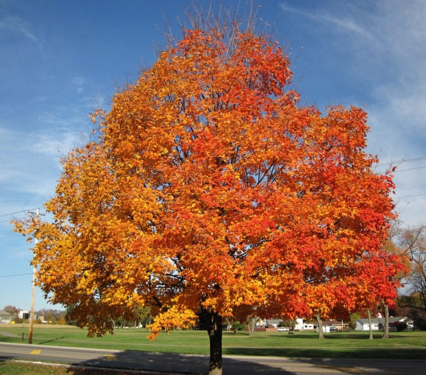
El árbol de arce es uno de los que más llaman la atención: sus hojas palmeadas son muy decorativas durante todo el año, pero sobretodo en otoño que es cuando cambian de color volviéndose rojas, anaranjadas, amarillas o púrpuras. Además, da una excelente sombra, lo que resulta ideal para disfrutar del aire libre en los meses más calurosos. Así que si quieres una planta bonita, fácil de encontrar en viveros y relativamente fácil de cuidar.
Se caracterizan por tener hojas opuestas, las cuales suelen ser palmatilobadas en la mayoría de las especies, pero también hay alguna que las tiene pinnadas compuestas, palmaticompuestas, pinnadas avetadas y sin lóbulos. Son plantas dioicas, es decir, hay pies machos y pies hembras. Las flores, que brotan a finales de invierno o principios de la primavera, aparecen agrupadas en inflorescencias en forma de racimo, corimbo o umbela. En el caso de que sean polinizadas, comenzarán a madurar los frutos, que son llamadas sámaras las cuales al desprenderse van girando movidas por el viento.
Nuestro protagonista se cultiva principalmente como planta ornamental y para dar sombra. Son muchísimas las especies que crecen hasta alcanzar alturas de 10 metros o más. Tiene que estar en el exterior, en semisombra.
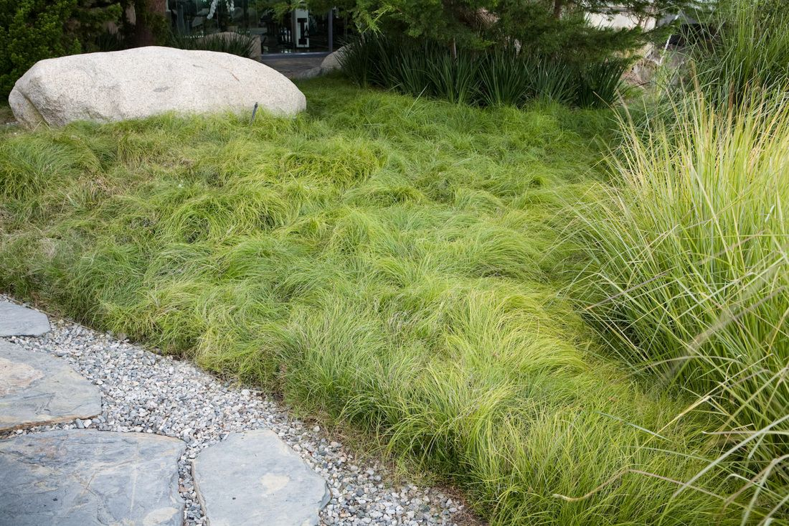
Planta perenne muy cespitosa provista de un rizoma del que surgen tallos fértiles de hasta 50 cm de longitud, de contorno trígono, lisos o algo escábridos en el ápice. Tiene hojas de hasta 2.2 mm de ancho, más o menos tan largas como el tallo, planas, con el borde áspero; su lígula, de hasta 1.8 mm, tiene un ápice obtuso. Las flores se reúnen en inflorescencias de tipo espiga, muy alejadas unas de otras y con una bráctea basal foliácea, más larga que la inflorescencia, pero que no la envaina; las espigas son similares, ginecandras, aunque a veces la inferior es femenina.
Crece en alisedas ribereñas y zonas húmedas de hayedos. Puede hallarse también en suelos húmedos de hayedos y bosques riparios, principalmente alisedas.
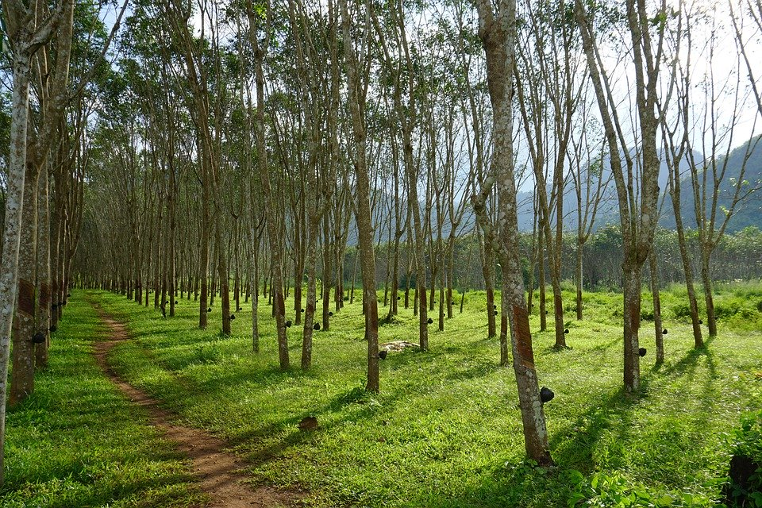
El árbol de caucho se caracteriza por tener una altura de 20 a 30 cm de largo. Las hojas tienen una longitud de 16 centímetros, por 6 a 7 centímetros de ancho; sus hojas se desprenden de el durante épocas de estaciones secas. Antes de hacerlo las hojas que se encuentran en la cúspide del árbol adquieren un color de un rojizo intenso. El tronco de la especie es recto y de forma cilíndrica. Además tiene 30 a 60 centímetros de diámetro, conocido por su madera blanca y liviana. El tema de los árboles de caucho suena increíbles, pero requieren algo de paciencia cuando se trata de su producción: un árbol de caucho, también conocido como caucho, no puede ser tachado para látex hasta que cumpla los seis años de edad.
Los árboles de caucho tienen madera blanda, ramas altas ramificadas y una gran área de corteza. El líquido lechoso (látex, que en sí mismo se usa para una gran cantidad de artículos) que destila de cualquier perforación hecha a la corteza del árbol contiene aproximadamente un 30 por ciento de caucho, que puede ser coagulado y luego procesado en productos sólidos, incluyendo llantas de caucho.
Para reproducirse, el fruto de la madera de caucho se abre de golpe cuando está maduro, esparciendo sus muchas semillas en un área que abarca hasta 100 pies del árbol. Es solo después de una larga serie de procesos que el árbol es capaz de producir diferentes tipos de caucho utilizados por diversas industrias en todo el mundo, incluidas la industria comercial, médica, de transporte y de defensa.
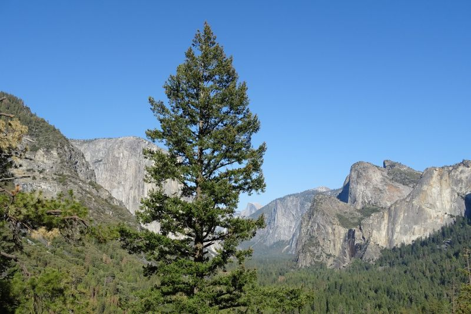
Conocido por ser parte del grupo de las coníferas, el cedro es un árbol de gran porte de la familia de las pináceas. Debido a su copa de forma cónica y su madera olorosa es utilizado como un árbol ornamental en muchas partes del mundo. También es muy apreciado por su madera, utilizada en ebanistería.
Estos árboles llegan a medir entre 25 y 50 metros de altura. Las hojas son perennes y presentan la forma de agujas muy delgadas, de color verde y que miden unos 4 cm de largo. Estas hojas se presentan aisladas y naciendo desde los brotes en las ramas más jóvenes del árbol y en forma de ramillete en aquellas ramas de más de un año de edad. Como todas las coníferas, el cedro presenta una estructura de semillas femeninas en forma de conos, que en algunos lugares son conocidas como piñas. Estos conos alcanzan su madurez al cabo de año, momento en el cual el cono se desintegra y se expanden semillas maduras para la reproducción de estos árboles.
Las flores se presentan en inflorescencias, son pequeñas y con un olor característico algo desagradable que recuerda al del ajo. El fruto es una cápsula de muchas semillas aladas. Son árboles longevos, pueden llegar a vivir unos 2000 años.
Existen 4 especies muy reconocidas de los árboles de este género, cada una de ellas con características particulares y bien definidas: el cedro de Himalaya, el cedro del Líbano, el cedro de Chipre y el cedro del Atlas.
Es muy apreciada por sus diversos usos y aplicaciones. Presenta un color rojizo, es compacta, ligera y aromática. Es elegida por su gran resistencia a los insectos. La madera del cedro es estable y fácil de trabajar.
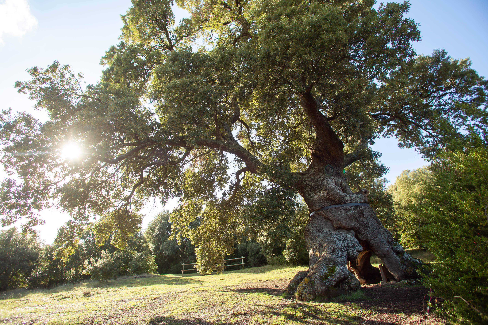
Los encinos o robles pertenecen al género Quercus, familia Fagaceae; son árboles y arbustos de hoja ancha perennifolios (siempre verdes) o semicaducifolios, con flores femeninas casi inconspicuas que después de fercundada, desarrollan un fruto característico del género conocido como bellota. Estos árboles constituyen vastos bosques en zonas templadas, siendo elementos fundamentales de las comunidades de bosque templado en las montañas
A lo largo de la historia, los encinos han sido una fuente importante de extracción de recursos para beneficio humano; entre los productos explotados están los taninos para la curtiduría de pieles, la madera para ser utilizada como combustible (leña y carbón) o para la elaboración de muebles, durmientes, mangos de herramientas, cabañas, entre otros. Por otro lado, las bellotas han sido utilizadas para la elaboración de una bebida similar al café y como alimento para el ganado porcino.
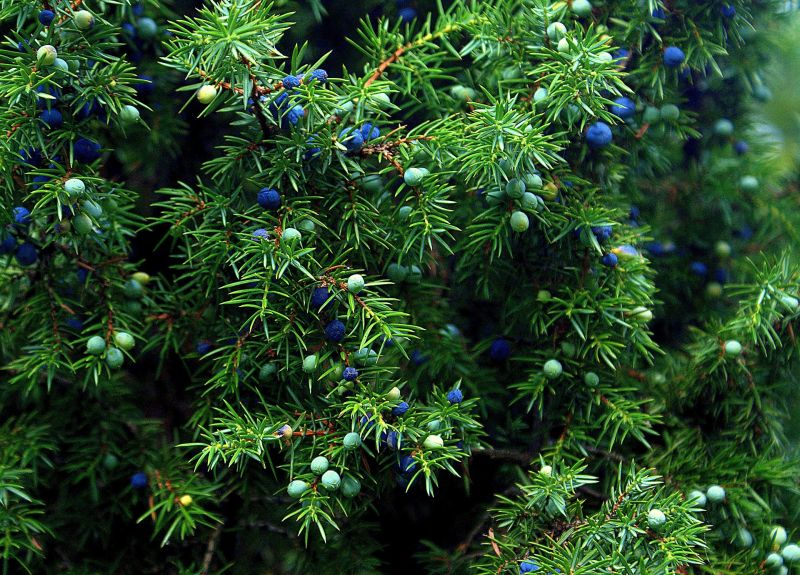
El enebro es una planta de las del tipo perenne. Se la define como un arbusto de la familia de las Cupresáceas. Es un arbusto que llega a medir unos 2 metros de altura y es muy estimada por sus frutos que son utilizados en la gastronomía. El nombre científico del enebro común es Juniperus communis, pero también se utiliza el nombre de enebro para denominar a un conjunto de especies del mismo género, cuyo rasgo más destacado es el de mostrar siempre un aspecto muy juvenil en su follaje.
Este es un arbusto que presenta numerosas ramas y cuya altura ronda los 2 metros, aunque se han llegado a registrar ejemplares de 10 metros de altura. Su característica distintiva son sus hojas con forma de agujas grandes, de un color verde intenso. Estas hojas se agrupan en las ramas de a tres, en forma de espiral.
El enebro es un arbusto de los conocidos como dioicos, es decir que existen plantas masculinas y, por otro lado, femeninas. Lo que significa que no se presentan ambos sexos en una misma planta, sino que la diferenciación sexual se da entre plantas.
Las flores del enebro aparecen en el otoño en las plantas femeninas y en la primavera florecen las masculinas. Los frutos del enebro son gálbulos (y no bayas como muchos creen) que comienzan a aparecer a partir del tercer año de vida de la planta. Son estos frutos los que se utilizan para su consumo. Estos gálbulos son verdes durante su madurez y una vez secos, adquieren una tonalidad púrpura, casi negra.
Estos arbustos, además de su uso en la gastronomía y hasta en medicina, son muy apreciados como ornamento en jardines, por ello su cultivo ha ido extendiéndose a los hogares, deseosos de contar con una planta vistosa y a la vez muy aromática.
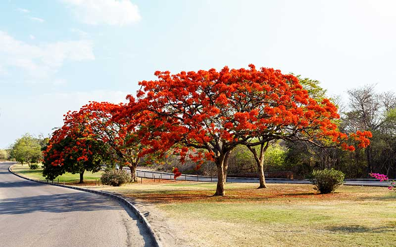
El flamboyán, framboyán o flamboyant es un árbol de gran tamaño y vistosas flores y no se encuentra en peligro de extinción, pero en los últimos años comienza a cernirse sobre la especie el peligro que representa la deforestación.
Se trata de un árbol que alcanza 5-12 metros de altura, si bien algunos adquieren unos 15 metros. El tronco es estrecho con una corteza de pálido color gris. Las hojas son verde brillante, miden de 30 a 50 centímetros de longitud y se disponen en 20-40 pares de folíolos primarios y 10-20 pares de folíolos secundarios. En palabras más simples, imagina la hoja dividida en dos partes, una izquierda y una derecha, cada una de la cual se divide en pares de hojas más pequeñas. A primera vista, las hojas parecen helechos.
Gracias a las flores el árbol es considerado uno de los más hermosos de la flora silvestre. Son flores grandes mayormente rojas (una variedad exhibe flores amarillas) formadas por 4 pétalos color rojo intenso y uno un poco más largo y coloreado de blanco, amarillo y rojo. Aparecen en los extremos de las ramas. Las semillas están contenidas en vainas de 40 a 70 centímetros de longitud que se presentan verdes pero que al madurar obtienen un color marrón oscuro.